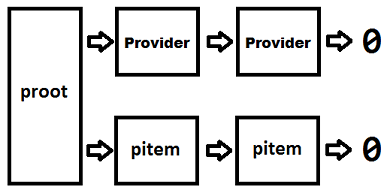
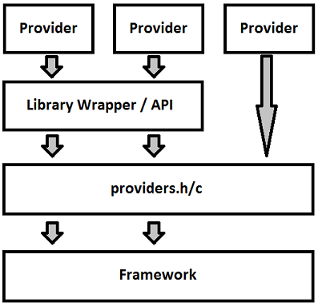

Writing a Provider for the CPUB Framework
Version: 1.3.0
Overview & Background Information (The challenge)
The primary challenge (and greatest value) of CPUB is the ability to provide a simplistic reference to disparate statistics throughout a system. The framework then must repeatedly retrieve the same stat, keeping the previous value for diff (rate of change) purposes. The framework is challenged with a means to describe the data, and the provider is challenged with retrieving the data. This document will detail methods for keeping track of data items within the provider implementation. How the request comes from the framework to the provider implementation is an important place to begin this process. The "tokenization" of data items allows them to be combined into config files that define new ad-hoc tools that spring forth and are modified as the user sees fit. The problem of how to turn this standardized token (called a "quad") into a specific data item is the topic of this document.
The quad is a four part descriptor that defines a piece of data and how to manage that data. It is a string representation divided by ":" (colon) symbols. The following is a BNF-ish description, and then a simplistic example of a quad:
<provider>:<provider_arguments>:<data item>[:<data arguments>]
A working (valid) sample is one of the timestamp data points from the core provider*:
core::24HHMMSS
This will provide a simple HHMMSS (where hours are 0 - 23) timestamp for each iteration of the framework. The core provider does not support arguments on it's data types (that are typically strings or more complex types), so the final quad argument has been omitted.
[* The core provider is a common provider to all the platforms. It generates a number of different timestamps and/or iteration values. ]
Language Choice and Implementation Issues (Let's get this out of the way)
The code for this project is C. The only two language contenders were C and C++. C was chosen for compatibility with the various header files. Some of which are not properly wrapped/handled in C++. That said, the problem here is really an object oriented one. The provider is expected to have several public interfaces that the framework can rely upon. Furthermore, there are a number of structs and functions that are provided to your provider implementation that you can rely upon. So, in short, you should "inherit" the code in providers and that should be your "public" interface to the framework. This OO approach will be discussed in detail throughout the sections that follow.
For example, it would be ideal for the provider implementation to inherit and override (extend) functionality provided by the base provider class. This is a C++ (object-oriented) concept. Instead using the C language, each provider uses and is accessible by a set of APIs provided by the providers.h/c code. This insures that there is a consistent interface to the framework (and back), yet all the ugly implementation specific details remain obfuscated by the provider.
Unfortunately this means that the language-enforced constraints of C++ are missing and developers must rely upon convention to enforce the OO concepts of the framework.
How Your Provider Is Called (Pay attention, this is important)
There is no reference to your providers header file (function prototypes) in the framework.
The previous sentence is important in understanding how your provider can plug into the framework. The provider must provide four interfaces (functions) to ther framework. One function is the registration of the remaining three (and that is usually buried in a library implementation). The remaining three are "standardized" interfaces that the framework only knows through function pointers. From those three interfaces, the provider is tasked with retrieving data for the framework.
Data Structures for Providers (How it ties together)
Data is broken down into provider and data item structures. A provider structure forms a linked list of all provider related data. Data item structures are individual data items that are served up by the provider. A frequently used example is memory and memfree. If your provider got its info from the memdata API, then the provider would likely be called "memdata". (This helps the user find their way back to the API if they need detailed information on what the stats mean or how they are derived.) The data item here is memfree (a member of the fictional memdata struct/API).
The provider framework is accessible from a proot struct. This struct references a linked list of provider structs and pitem structs. The list of providers is used by the framework to track things such as what providers are active (those that will have threads spawned), how to activate, and update data items. The list of pitem structs is an ordered list of items that the writer needs to commit to the final destination. For this reason, the proot struct is the common access point to the data between framework components.*
[* As a general rule, the proot struct is only used outside of the provider. It is used inside the provider implementation only when the provider first registers itself. ]
|  |
| Fig 1. Structure of provider data |
The proot struct tracks all providers (struct provider) in the system as well as all active data items (struct pitem). The proot holds references to all items the framework needs to know about. Provider and data item details are managed through the "private" parts of their respective structs.
The pitem structure holds the information needed to represent the data when "printing"* to external sources. This includes a reference (pointer) to the data, the (explicit) data type referred to, the header text, the name of the item how the data should be "munged" and the linked list pointer to the next data item.
[* "Printing" here refers to printing to stdout, a file, saving in a binary format, alarming, etc... Not necessarily just what is needed to write the data to the screen. ]
The pitem structure also holds "private" items used by the provider to keep track of how the data item is retrieved from the system. One example of this is the sioffset item (Struct Item OFFSET). This is the number of bytes to add to the base of the struct to find this specific member in the struct. This mathematical reference is much easier than keeping track of (and then updating) a series of pointers to previous, current, and presentable* data. The dstruct pointer is a reference to a struct of the providers own design that may be used to pull together whatever is needed to retrieve this information on each iteration. As the name suggests, it is a struct, but because it is a void pointer it can be a struct, a string, or a reference (pointer) to any data item.
[* The concept here is that when pulling data from an API into a struct, there are two structs. Previous and Current are two structs that rotate each iteration. Current becomes Previous, then what was Previous gets overwritten with the "new" Current values. Each iteration, the data is diffed or averaged into what is a presentable value. The presentable value is the data reference pointed to by the pitem->data_ptr value and what is passed to the writer for output. If each pitem struct tracked individual references to previous and current values, then these would need to be rotated as well. So, just before the data is collected for the provider the structs are rotated - and the individual p(rovider )item updates only need to find a reference to their data by finding the offset from the rotated values of the data structures. ]
The next_* items are used to hold the linked lists together. next_opi is used for the proot linked list of output items. (The writer walks this ordered list when writing items.) The next_ui member is used to maintain the (optional) "update items" list. (The provider can walk this list when determining what needs to be done to update all items that will go to the writer module.)
A "sign_flag" member was added to the pitem struct. This is an optional method of storing the sign of a value. The primary reason for this "out of band" sign storage is because the user may opt to diff the data on a data type that is unsigned. (For example: A memory value would be unsigned as you cannot have negative memory. The user then chooses to diff this value to see only changes. By default, most provider implementations will use the same data type for this storage as it retrieved the data from. So if the data goes negative (memory shrank over an iteration) then the negative aspect cannot be properly stored in the native data type that was never designed to represent negative values.) The sign_flag value can hold the sign for an unsigned type (as well as for signed types). The writer modules have been coded to respect the traditional signed types as well as the sign bit set here. The sign_flag is explicity unset in the functions provided for pitem creation to prevent it inadvertenly being set on a signed datatype that is negative. If the data is negative, the provider should use one method or the other (either set the sign_flag and the |VALUE| (absolute value) regardless of the type, or let the value be represented as negative in the native signed type), but not both. The provided CalcData() function will use the sign_flag and save only the absolute value of the data in the supplied type - regardless of it being signed or unsigned type.
| struct pitem | |||
| { | |||
| /* PUBLIC */ | |||
| char name[MAX_QPART_LEN]; | ⇦ | Holds the data item name | |
| int data_type; | ⇦ | Data type flag identifier | |
| void *data_ptr; | ⇦ | A reference to the end/printable data | |
| char* header[MAX_QPART_LEN]; | ⇦ | Header used when output needs to label data | |
| int munge_flag; | ⇦ | How the data is massaged (derived from data item args) | |
| int sign_flag; | ⇦ | Optional storage location for the sign bit | |
| struct pitem *next_opi; | ⇦ | Used to walk the list of items to be output | |
| /* PRIVATE */ | |||
| unsigned long sioffset; | ⇦ | Used by the "dynamic method" providers to find struct members | |
| struct pitem *next_ui; | ⇦ | Linked list of "update" items | |
| void *dstruct; | ⇦ | Used primarily by "complex method" providers | |
| }; | |||
The provider structure holds all references to items needed by the framework for the provider including the update item list. To be more specific, it is the primary interface into the provider. The intent is for most other provider data structures to be defined statically to the provider implementation. While the update list is an internal housekeeping kind of structure, it is provider for by the provider.h/c "base class" because it is a common need of all providers. This is somewhat like a C++/OOP class would contain the data - keeping it obfuscated from external sources.
One of the more notable differences with the provider structure is the inclusion of three function pointers for the well-defined external interfaces to the provider. These are called: update(), list(), and enable(). (More on these later.) The other items are more "intuitive", such as update_required that is a flag to determine if the provider has an active data item. (This will be used to determine if a worker thread needs to be spawned for this provider to do updates. It is set when the first data item in that provider is activated.) The name and linked list next items are fairly obvious.
| struct provider | |||
| { | |||
| /* PUBLIC */ | |||
| char name[MAX_QPART_LEN]; | ⇦ | The name of the provider (first quad part) | |
| int update_required; | ⇦ | Boolean flag to determine if provider is "hot" | |
| int (*refresh)(int interval); | ⇦ | "update()" function pointer | |
| int (*listavail)(int dflag); | ⇦ | "list()" function pointer | |
| struct pitem *(*enablepitem)(struct qparts *qp); | ⇦ | "enable()" function pointer | |
| struct provider *next; | ⇦ | Linkage for the provider list | |
| /* PRIVATE */ | |||
| struct pitem *ui_list; | ⇦ | Holds list of items to be updated (optional) | |
| }; | |||
Ways To Write A Provider (Use what works best with your data)
The "Dynamic Method" (I do pointer math for fun)
The most popular method is to programmatically find your way to the data. This method is a response to APIs that return data in structures. This basically boils down to "if the requested data is x then record the offset for struct member x; if the requested data is y then record the offset for struct member y...". Once the connection has been made - the update only involves retrieving the data from the offset of both structs (if diff-ing) and inserting into the destination location. After the offset is determined, the update code never needs to know what struct item it actually was. The most used tool in this "method" is the sioffset value that tracks the offset from the base of the struct to the data item.
The "Item Specific Method" (Each data item is special snowflake)
Most providers will use the dynamic method and the rest will likely use the complex method, but a few may use the "item specific" method. This is where the data in a provider may come from different APIs - but has been joined under a common provider because they are somehow related. The example provider that most exlempifies this is the "core" provider. Some data in the core provider comes from time(), some from gettimeofday(), some from other APIs. Because they are all timestamps, they have been joined into a single provider. But on update, the provider needs to know what API to call for each (type of) data item. (Interestingly, the core provider (re)uses sioffset to hold a #define'd tag that is used in a switch() to differentiate between each method to retrieve the data for that data item.)
The "Complex Method" (I've got 99 structs...)
Calling this method "complex" is not exactly justified - it is kind of a "catch all" for providers that have to do more specialized requests for data. This is a case where the same API/method may be used to retrieve the data, but it needs to be called more than once, with different data sets. A reference to this type of provider is the "process" provider. In the process provider, there are effectively two lists of items that the provider is aware of: the list of PIDs and the related previous and current data structures and then another list of the output data items. If the provider simply kept PID references on each data item, it might have multiple references to the PID and may update the same PID multiple times as it walked through the item list doing updates. Instead, it uses a two pass method where it updates all PIDs from a PID list, then it calculates all items from the per-PID retrieval it just completed.
| Dynamic | Item-Specific | Complex | |
| Overview | The provider tracks all the data. The pitem tracks a pointer to its data. | Each data item type has a different code path. | Varies - but may entail special data retrieval and handling. |
| Strengths | Extremely lightweight, scales well. | Logically groups like data that uses unlike retrieval methods. | Can present more meaningful data and potentially lower cost. |
| Weaknesses | Pointer management is a bit complex. Code can be "crafty". | Processing updates involves complex code paths. | The hardest of all to code. |
| Reference provider* | perfstat.cputotal (AIX); meminfo (Linux) | core (all) | file.stat (all); process (AIX) |
[* What this document lacks in concept coverage should be completed by looking at the code and comments in the representative provider implementations. In short, refer to the code. ]
APIs and Interfaces (Look before you write)
The providers.h file has proper descriptions of the functions used for provider management. What follows is a quick run-down of all the functions. Make note that the "Private" and "Public" usage tags are really about design and intent as the C language has no formal recognition of these conventions.
| API | Usage | Description |
| Providers() | Public | Initializes the proot structure. Called once by main(). |
| RegisterProvider() | Private | Initializes a provider structure and adds it to the proot structure. |
| NewPItem() | Private | Initializes a pitem struct. |
| StrToQuadPartsCreate() | Private/Public | Creates a qparts struct from a string quad representation. |
| StrToQuadPartsFill() | Private/Public | Fills an existing qparts struct from a string quad representation. |
| DumpPItemList() | Public | Called by the framework to have all providers dump data item lists |
| DumpQuadData() | Private | Used by a provider list() implementation to consistently format expected output data. |
| ShouldDiff() | Private | Simple test to see if quad data item arguments call for a diff (between latest and last values). |
| ShouldPSAvg() | Private | Simple test to see if quad data item arguments call for a psavg (average per-second value). |
| GetProviderByName[Str|QP]() | Public/Private | Retrieve a provider reference given a quad representation in string or qparts format. |
| EnableDataPoint() | Public | Enable a data item based on a quad string. The pitem structure for this data point may not exist until this is called. So this should be called before attempting to retrieve the item. Called exclusively by the framework. |
| InsertUpdateItem() | Private | Used by the provider as a uniform means to manage (add to) the optional update item list. The code here is painfully simple - but the point is to simplify, standardize, and streamline this much as possible for the provider developer. |
| GetActiveProviderCount() | Public | Used by the framework to count the number of providers that are active (have active data items). This is obviously called after the data items have been activated. |
| GetNextActiveProvider() | Public | Used as a means to walk the provider list returning only those providers that are active. |
| CalcData() | Private | Simplifies the calculating data and assigning it to the output location for the provider's update() implementation. |
While there is not a significant number of cases, there are APIs in the providers.h/c "framework" that are cooperative. This means effectively means that if you stay in the framework design you are ok, if you decide to roll your own implemetation you should do so carefully. Efforts have been made in the code documentation to note these issues, but the most notable is the EnableDataPoint() and NewPItem() functions. EnableDataPoint() is called externally, and will call the provider's enable_pitem() implementation, which is expected to call NewPItem() internally. Because writer items need to be saved in the pitem struct (that the provider should not typically care about) these two provided functions will handle this for the provider writer. They do this by piggy-backing the data onto the qparts struct that is passed between the functions. The provider's enable_pitem() and update() implementations will (likely) be oblivious to this data handling that happens on its behalf. If the provider writer were to re-implement these functions, the implementation would be responsible for items that have little or nothing to do with providing data.
The following image (Fig. 2) is an over-simplified representation of the interface between the portions of code. A few items are of note:
|  |
| Fig 2. Data flow through API interfaces |
Library Conventions (Managing a diverse build tree)
OS specific providers are built as part of a OS specific library.
All the OS specific code resides in a OS specific library. The framework does not need to concern itself with the provider details (such as function names, data structures, or data access methods). The library has a single registration point for all providers in the library, and then each provider supplies a highly standardized interface through that registration point. The three functions that each provider "publishes" will be covered later in the document, but the key point here is that the boundaries (requirements) of the providers are well defined.
"Common" providers are built as part of a library.
Providers that are cross-platform are built into the common library. (The core provider is an exception to this rule.) The common provider library works like the OS-specific versions, except that it must compile and run on all platforms that cpub runs on. (If you find that your code is littered with port-specific #ifdefs, then you might consider writing a different implementation of the same provider in each OS-specific build/library tree.)
The OS-specific library is built in a directory name matching uname -s
The make/build process can find the OS specific parts to build using this method. This way one OS'es APIs are not (tried to be) compiled on another OS.
Each OS-specific library has a single, uniquely named header file.
This is typically <OSNAME>providers.h. This could be done in a more crafty manner, but the current design causes an error if there is some sort of Makefile mishap and the wrong item is somehow referenced. So, for example, the AIX header file is AIX/aixproviders.h.
All providers (from the library) are loaded with a single function that is the "load-point" for all provider functionality.
This function name must be defined in the previously mentioned header file. This function name must be: ALLOSRegister() and it takes a single parameter of a proot (provider root) struct. All the providers will hang off this struct.
All the providers use the provider struct.
Within this struct is a series of function pointers that reference the methods used to interact with the provider. It is up to the provider (developer) to decide how to fulfill the requests. Meaning: implementation is provider specific.
The library that is built in this (OS-specific) directory will have a consistent name of "libprovider.a".
Largely just a convention, but this helps in keeping the makefile noise under control.
Best Practices (Save yourself some pain)
Use explicit data types.
Providers should use well defined "C99 data types". This is because bitness dependent types are a problem when passed through void pointers. Stick to the precise type and be safe - when working on a platform know your types and know your bitness. (All platforms should be compiled 64bit.)
Test and validate your data type assumptions.
Most OS supplied APIs return typedefed data types. These types are frequently obfuscated from the developer so that implementations can swap types at a later date without breaking code. If you use the supplied type, you will be safe. Unfortunately, the framework must pass references to types between modules. For this reason, the reliance on typedef-ed types becomes unsafe.* The problem is when one assumes these types are a specific size when they might in fact be different based upon the version of the API called or the bitness of the compile. For this reason, it is recommended that all types that are used (converted to more explicit types) should be tested with assert() macros.
[* This is a bit contrary to standard practice. The use of typedefed types throughout an application is considered safe in most cases. Here, it is impossible to create writer modules capable of writing the hundreds of typedefed types that all the providers might generate. The solution is to distill them down to a small list of standard types that all writer modules should be expected to support. ]
Here is a sample test for the time_t data type on your platform:
assert(sizeof(time_t) == sizeof(uint32_t));
If the OS vendor slips in a 64bit variant of time_t, while the references (pointers) to it are assuming 32 bit values, then unhappiness would result if appropriate tests like this are not done.
This (assert() "call") should be done in the provider initialization code. This way the test-before-ship for data types becomes as simple as registering all providers. ("cpub -l" will be sufficient to cause all providers to be registered and all assert()s to be tested.)
Init data on first registration
Providers are designed to be of minimal weight. Each provider has two states: registered and activated. The provider registers on startup. This registers the interfaces to communicate with the provider. The framework (driven by user instructions) may choose not to engage the provider at all. Once a data item is chosen for output by the user/framework, then the provider is activated and will be expected to provide data. If the provider is only registered, then it should not be allocating space for memory structures or engaging the system to retrieve data. The recommendation is to not "light up" the provider until the user has asked for the first data item.
Validate data access on first registration
The user running the framework may not have sufficient privileges to access the data. The data might not be valid for this particular system. So it should be validated on registration that the data can be accessed. This is also made more convenient in that the framework registers all data item requests before the process daemonizes itself and/or spawns threads. So handling error conditions on startup is much easier than when regular iterations are happening.
The steps for writing a provider are: (Your sleeves should be in the rolled-up & coding position)
(This is a Linux example here, map to your OS-specific implementation build tree as appropriate)
1. Investigate/understand your data source.
In this fictitious example I will be instrumenting USB data found in /proc/usbstats. This file has a number of counters and associated names in an expected format - so I can just pull both the names and the stats right out of the file.
4. Determine (design) how this provider will track data it is repsonsible for.
How this works is up to the developer (implementation specific). This was discussed earlier in "Ways To Write A Provider". In a nutshell - a method must be designed to map a string quad representation supplied by the user (via config file) into the data that resides in /proc/usbstats. The design I will use in this method will involve parsing the data out of the /proc file into a struct of my own making - and using the "dynamic" method to track my individual items. (This is made somewhat easier by the fact that the Linux library implementation has some helper functions designed for reading /proc files.) I could try to get crafty here by trying to determine offsets in the /proc file - but I will resist that temptation for the safer "extract to a manageable source" method. So, I may pay a bit extra (computationally) to read the whole file, but I save on exception handling and design complexity.
The proposed method will:
✔ Extract data from the /proc file into a struct.
✔ Use "update list" based pitems to track the selected (to be updated) items.
✔ Each pitem->sioffset will contain the offset from the top of the struct to the specific data item it needs in the struct.
3. Create a provider source file that will plug into the OS-specific build directory.
I shall call my source usbprov.h/c. These files will be placed in the Linux/ directory.
4. Include a provider registration in the "main" library entry point.
The function created here will be dropped is the ALLOSRegister() function as defined in the primary library header file. ALLOSRegister() is responsible for registering your provider in the framework. The function in this example shall be called USBStatRegister(). The forward declaration is in usbprov.h and the code is in usbprov.c. It is ONLY called from ALLOSRegister(). AllOSRegister() is defined for Linux in Linux/linproviders.h, and is coded in Linux/linproviders.c. The RegisterProvider() function defined in providers.h does the bulk of the work of the registration for you. (It has a number of parameters that will become more clear in the steps that follow.) In this implemetation I will only call RegisterProvider() and leave any memory allocation or other work until the user (the framework) requests the first data item from this provider.
The provider registration should:
✔ Set the bare minimum of provider data. For example: NULL out pointers to provider data. These can be (conditionally) tested for and then malloc()ed later in the first data item registration.
✔ Test all your typedefed data types against where it will be stored.
✔ Call RegisterProvider() (with all access function names - see the next step) to initialize the provider structure.
5. The registration of the provider requires that I also register several functions for data access (that were referenced in the previous step).
These are:
| • | update() | ⇐ | Called iteratively to refresh the data |
| This will not be called on your provider unless an item has been requested by the user. That said, the provider should be aware of what the user has requested (via the enable_pitem() API). The flag value for calling this is the provider‑>update_required boolean. When update() is called, the provider needs to retrieve the latest data and update all the data items that have been chosen for output. | |||
| • | list() | ⇐ | List (to stdout) all data points by this provider |
| This is used to dump a list of all the data items that the provider is capable of serving. It uses the DumpPItemList() API and the associated helper APIs. It is strongly recommended that these APIs be used. The desired outcome here is a uniformity in the output. The point of this list is to tell the user what data points he can pick from. | |||
| • | enable_pitem() | ⇐ | Start data collection for this item |
| This tells the provider that the data item described by this quad is desired for output. The local implementation is required to: ✔ Capture this enablement for updating. This can be placed into the provider‑>ui_list,. This really depends on how the provider tracks and updates the items. Some may step through the ui_list, or others may simply check the collect flag. ✔ Capture the "iargs" flags that are appropriate to data munging. The captured (supported) flags should be applied to the pitem‑>munge_flag value. This will be used when processing the data. |
6. Add a functional description of the provider to the cpub.1 man page.
The man 1 page is divided into three parts. The first and last pars are generic, with the middle part being the OS specific provider information. In this case, because this is a Linux-specific provider, the content will go into the Linux-specific part of the man page. The build process for the final man page will combine the appropriate parts for the platform the build is happening on.
The pitem lists (Checking a list, and keeping it twice)
When a pitem is created it must be added to the output items list (for the writers to use) but will likely be tracked inside the provider as items it needs to update. These lists are:
Update items ( Root: provider->ui_list; Link: pitem->next_ui; )
This is actually optional - but highly recommended. It is provider maintained (not a public list). This is (can be) a primary method for the provider to know what items should be updated.
Output items ( Root: proot->pi_olist; Link: pitem->next_opi; )
This is the required, ordered list that is used to manage output. This list is what is sent to the writer module for output. Ordering (consistent with the config file quads) must be preserved so that the end consumer can properly parse the data.
FAQ (Flotsam and jetsam)
First... why call this "cpub"?
Part arrogance, part promotional effort, part laziness. cpub is designed to be an extension of CPUA<go>. Unfortunately it reads more like "See-Pub" than "CPU-B". Other / better names were suggested, but none overcame the inertia of the initial name. So, if Ben Mosse came back he could give us a catchy name like crum or showtunes - until then, we are stuck with my amateurish attempts to mimic his tool naming genius.
What should my provider do when it gets an unexpected (read: unsupported) provider argument?
As a general rule, the CPUB framework will display an error and exit when it cannot fulfill the request of a user. That said, unused provider arguments as well as un-satisfiable data item arguments are typically just silently ignored. If the addition of an argument would be expected to provide a result, but it does not, then an error-fail condition may be more appropriate. But if the user mistakenly asks for the psavg on a string data type - this obviously cannot be satisfied, and in most instances of the code would be silently ignored. The correct answer is that the invalid user input should be validated in all cases. The practical answer is that not all implementations check every argument.
Why doesn't that provider provide massaged results?
Most providers are designed to spit out raw, or slightly modified data. Provider implementations in most cases are acting as a thin layer over the data sources. The intent is to use post-processing to get aggregated or more "normalized" data.
Sure, but I would really like to get more managed values.
Fine - Write a provider that does that. And then make sure that you document how the numbers in this provider are aggregated, munged, massaged, etc... from the raw numbers. Every provider adds value to the framework. This kind of development is encouraged.
Why is the man page (cpub.1) in parts? Why do I have to "build" the man page with make?
The command man page (cpub.1) is in parts because the header and footer (beginning and end) should be exactly the same in all OSes. This part of the "tool experience" should be consistent across ALL operating systems. The middle part (the provider documentation) is OS specific. The OS specific parts are kept from the universal parts. So yea, the need to build the man page is a bit irritating, but the goal here is cross-platform consistency in the tool, and per-platform strength, and documentation of the providers. The need to "make" the page is a means to that end.
I want to write a provider that could apply to all platforms, what do I do?
Write it. Put it in the "Common" build tree. But make sure that you test and support it on all platforms (AIX, Solaris, & Linux). Most "standard" OS APIs are truly standard. That said, some differences exist either in the APIs or the compiler's interpretation of your code. So it will be important to do builds and tests across all platforms to insure things are behaving consistently.
This raises a point; what are we going to do about cross-platform build issues? Are there plans for continuous builds?
There are no plans for continuous builds or even where to host the code at this time.
This app leaks memory!
Technically, it leaks memory, but in practice it does not. It allocates a number of structs during startup that it never releases. This is only during startup and is very inconsequential. Memory should NOT be allocated during normal (iterative) operation. The "init" parts of the application may allocate pointers to data, and then return NULL without free()ing the memory. Whenever this happens it is because the NULL is a fatal error condition that will terminate the program. While the free() is admittedly a best practice, the locations that this happens are all on startup and are consitent in that they are failure conditions that doom the application to premature exit (and implicit free()s of the allocations).
Why didn't you write this in <insert my favorite language here>?
The common API / access method to all these interfaces are C. The fastest language for this (performance sensitive) task is C. The language is more complex than, say... Shell, but only a subset of the user base needs to actually write the providers (or writer modules). The real value here is to the ease of use and potential gain to the broader community of users through a lightweight and powerful tool. So, yes, the developer pool is somewhat limited - but that really has more to do with the application and task requirements than it does with the language choice. In short; the subject material of what is developed here would reduce the pool of potential developers more than the choice of language to write the tool.
The dependence on C is nuts! Even users have to go to the C header files to find out what is in these providers and data items.
This is true. Admins wanting to author a .cpub config file need to know what the data is and what it means. But this also means that 1. understanding these values is not easy, 2. C is universally the language used when discussing Unix algorithms and internals, 3. not everyone will be authoring .cpub config files (most will be consumers), and 4. GOOD - we want more people to be looking under the hood to see how this stuff works.
What happened to the "list method" poviders?
The (now depricated) list method involved creating a list of pitems known to the provider, then moving those items to the update and output item lists when they were requested. A single pitem could have been in three lists at once (known items, update items, and output items). The problem is that in some situations (such as setting alarms), it may be necessary to register the same quad within a provider more than once. If the pitems are not created when requested then it is impossible to include it more than once. This shift in thinking allowed for multiple registrations, but also simplified the API for the provider.
What's up with making all implementations 64 bit?
It is not really a hard requirement, but more of a strong recommendation. (On AIX it is a requirement.) The reasoning here is that 64bit apps do not need special considerations for large file support, get all the appropriate sized counters in most APIs, and have generally less issues when dealing with variable size data types.
What kind of provider should I write?
The value of the CPUB provider framework is that there is really a large range of potential providers. Many stats are not directly retrievable from the system but are instead derived values. It is possible to write a provider to do that work. Additionally, there is no need to stick to "performance" stats. Capacity stats such as how much disk is in use could be valuable. A CPUB provider could monitor just about anything that can be distilled down to a metric. The work has been done on the framework to allow for these extreme variations in actual deployed usage.
Do the providers support wild-card / REGEX expressions?
This is up to the provider. Most do not, and really should not. The first provider to support a wild-card for the provider argument is the "mount.df" provider. The "*" character is passed in to the enablepitem() implementation for the provider and it returns multiple pitem structures. Ordering of the output items does not matter (in most cases), but insuring that each output item and its associated structs are properly handled does matter. The providers.h/c implementation does not get in the way of the wild-card capabilites managed by the provider.
Who is Ottmar Mergenthaler?
Ottmar Mergenthaler was the inventor of the Linotype system. His invention revolutionized printing in the 20th century. No longer were newspapers and other sources of print bound to the same concepts of movable type that were developed in the 15th century under Gutenberg. The Linotype "hot type" system not only allowed printers to set effectively unlimited amounts of text but also allowed them to do it orders of magnitude faster than the older movable type methods. Mergenthaler removed the phrase "Out of sorts" from the typesetting vernacular. Mergenthaler is the second Gutenberg. - An additional note... this document was set in "Palatino Linotype", an exceptionally popular typeface developed by Hermann Zapf originally for the Linotype corporation / system in the late 1940s.